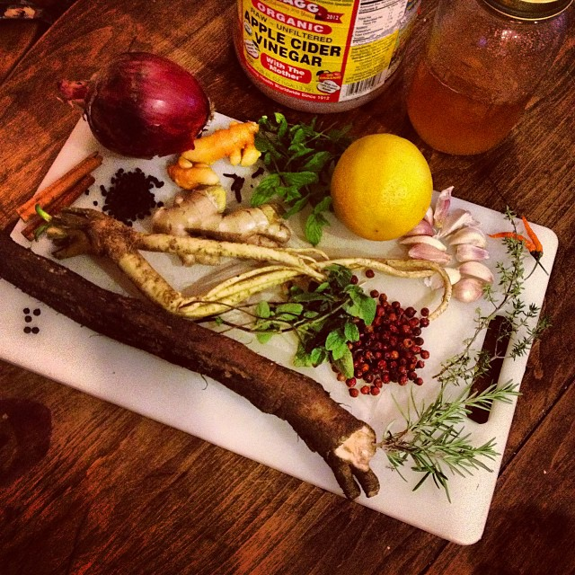
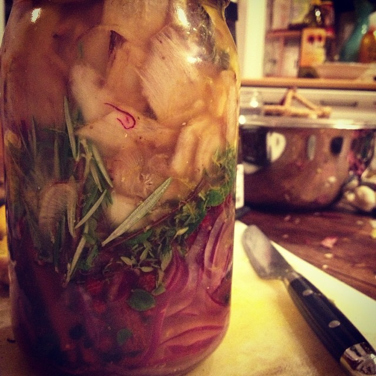
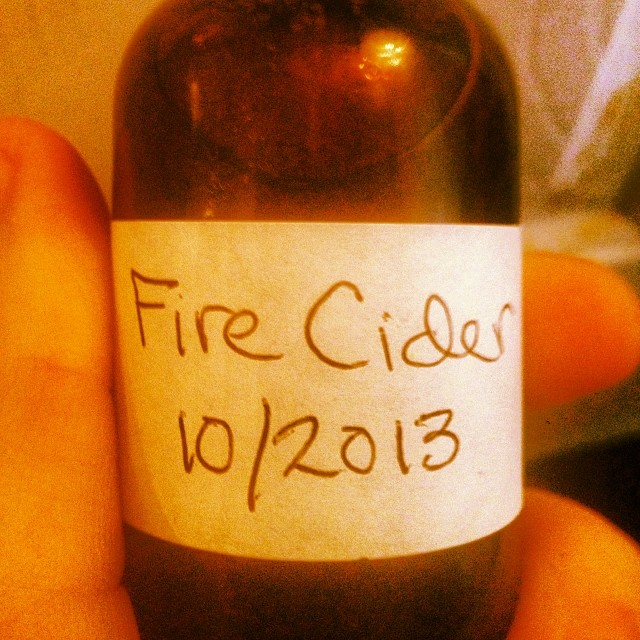

Fire Cider



This is your great-grandmother's raw, organic and powerful version of Emergenc-E®! Immunity-boosting herbs and produce are steeped in raw apple cider vinegar for many weeks before strained, mixed with raw honey and bottled. Ingredients include: raw apple cider vinegar, raw honey, onion, turmeric, cloves, spearmint, orange, garlic, hot peppers, cinnamon, elderberries, ginger, horseradish, oregano, rosehips, thyme, peppercorns, burdock, rosemary. Next Item